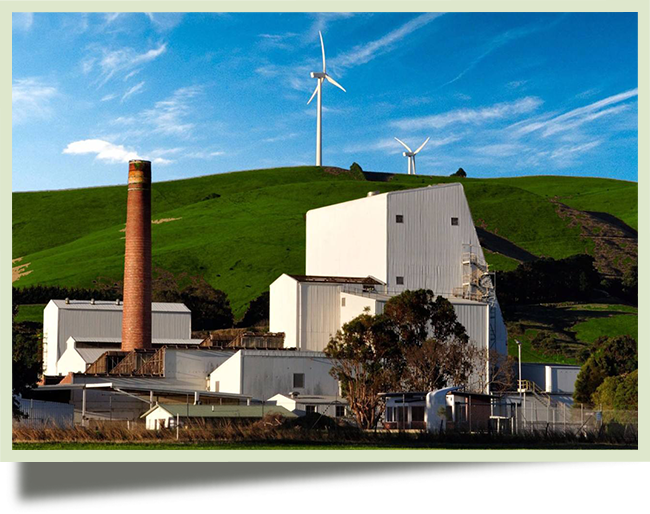
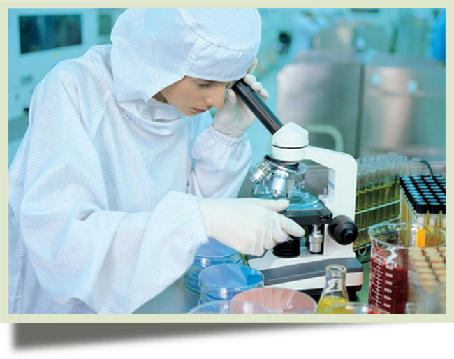
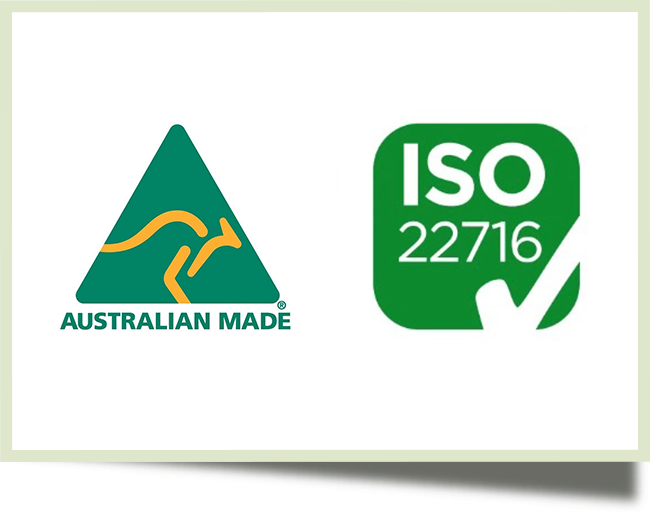
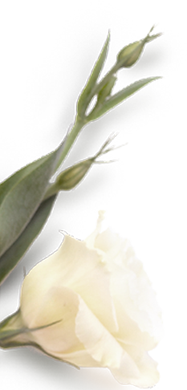
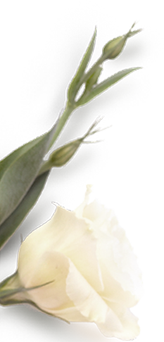

HEALTH·SAFETY·EFFECTIVIY
YURRAH
PRODUCTION
Natural Dermacare Pty Ltd is located in the bustling economic center of Little Collins Street, which is the gathering place of many high-end Australian brands. Our production plant (GMP) is also located in Melbourne, which has a pleasant natural environment and is rated as the most suitable city for human habitation.

TEAM
Our R&D team: Professor MARG SMITH has been in the field of natural skin care in Australia for more than 30 years. Professional certified pharmacist team led by Evelyn Lim focuses on R&D and production of natural skin care formula and natural plant research institute.
RESEARCH
We have Australia's most stringent quality standards and quality control processes, from R&D, configuration to manufacturing and production levels have strict quality control. For each formulation product, we have carried out many internal tests at different stages and levels. At the same time, we also use the services of certified independent testing laboratories to ensure that our products have the highest quality assurance, in line with our consistent concept of natural, safe and effective.


QUALITY
Our product certification standards, we have always been committed to the highest quality and ethical standards, products fully meet Australia's most stringent skin care standards, at the same time we have passed the EU's stringent ISO22716 certification.
 
